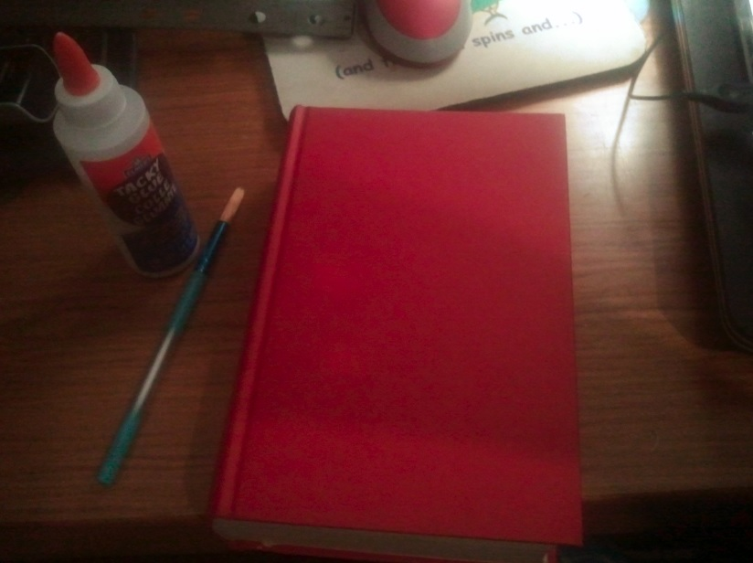
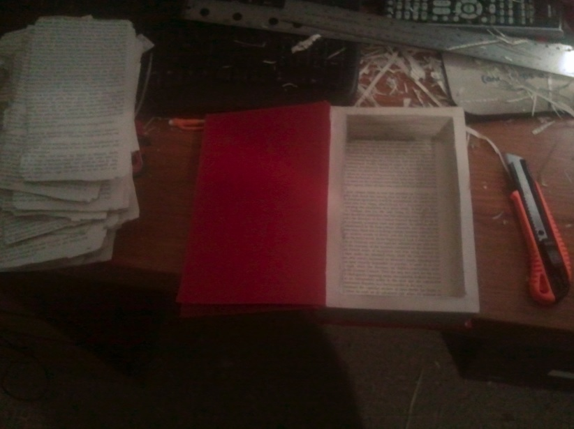
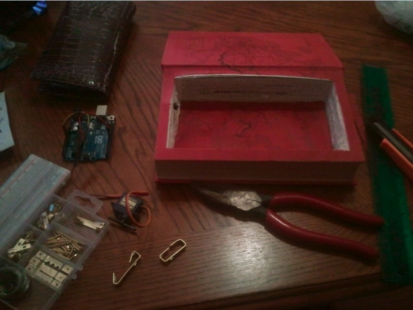
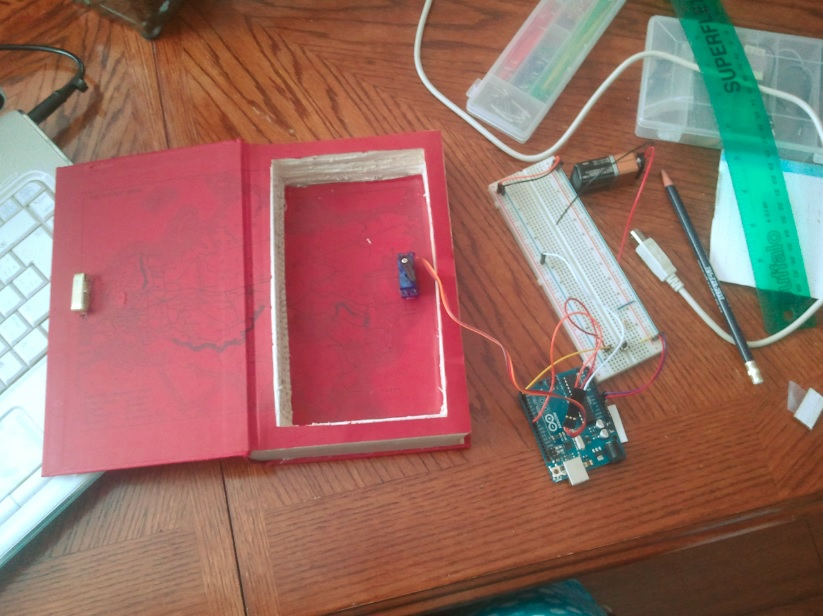
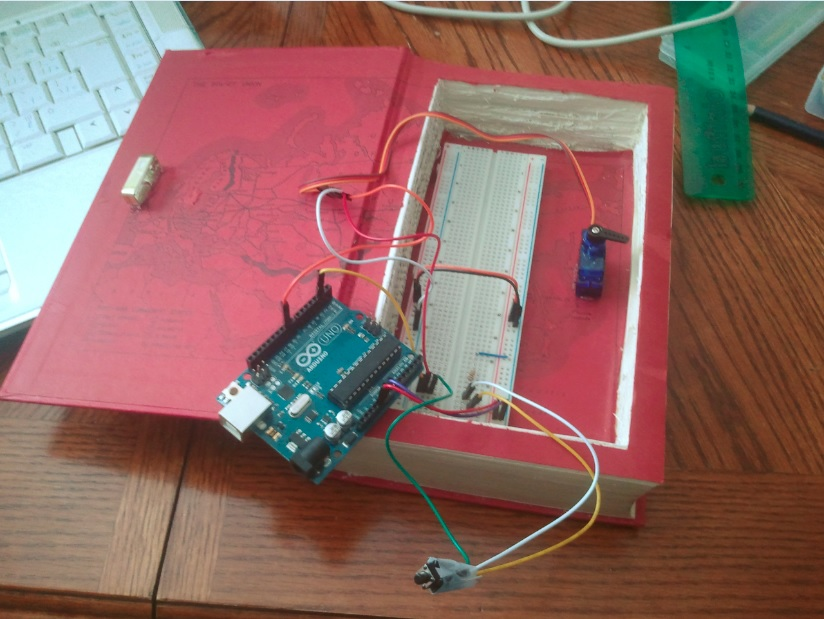
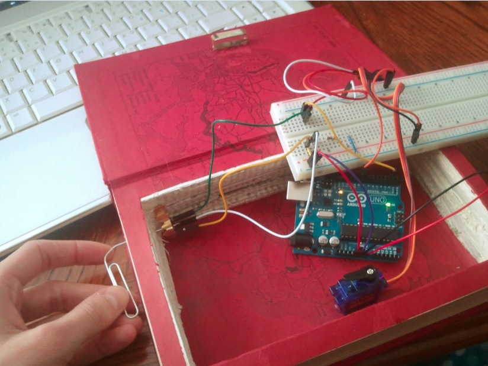
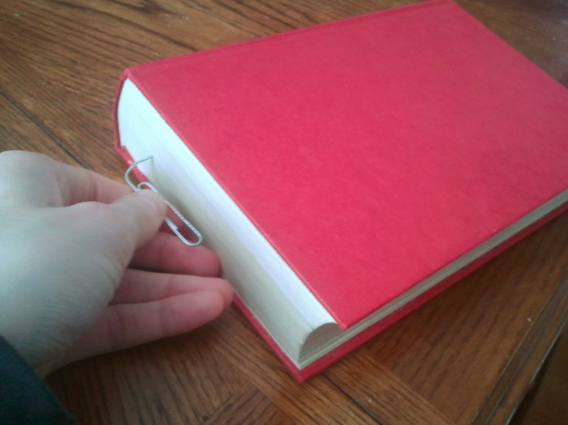
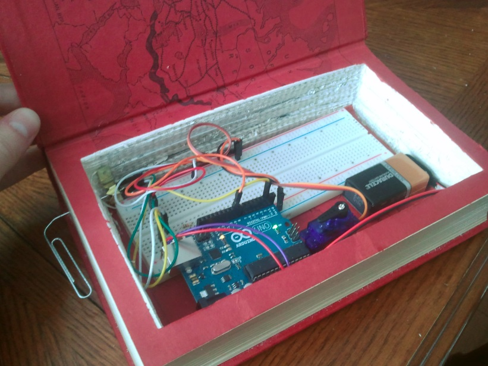
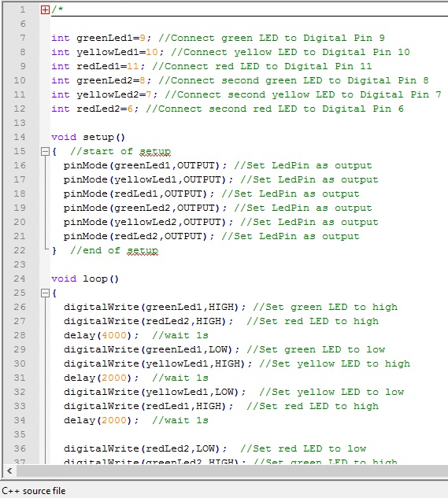

Projects
Client Content Manager Website
In Web Programming Fundementals we had to make a client content manager website from scratch. In other words, we had to construct a professional business website with the ability for the owner to sign in and make changes as they wish. Pictures to come soon.
Tic Tac Toe Program
In Programming Fundamentals we used Java to program a tic tac toe game! Although the project itself seems rather simple, it really futhered my knowledge on error handling based on user input. Pictures to come soon.
Half and Full Adder
In Math for the Computer Industry we constructed half and full adders to demonstrate our knowledge of logic gates and circuits. This was such a fun assignment for first semetser students and really helped me grasp a better understanding of electronics and Arduino.
@GC_Math1003 never thought I'd procrastinate homework to do other homework. Only at #Georgiancollege!! #nerd for life pic.twitter.com/5rW3u2IMk7
— Janice Exel (@JaniceXL) March 20, 2013
Arduino Book Safe
This book safe is my most memorable project so far at Geogian College.
In Computer Organization and Architecture we worked with Arduino. Arduino is a programmable microcontroller, primarily used for prototyping freelance projects. I used Arduino to hand craft myself an Arduino Book Safe!
First, I took an average book.
Then, I hollowed it out.
I gathered all of my materials!
I glued everything in, and put the Arduino parts together.
Tested to make sure it worked!
Drilled a hole in the side to unlock the "secret" button!
Tested once more!
Ah! Finished product. Just need to get a smaller breadboard!
Traffic Light
One of the first projects in Computer Organization and Architecture was to create and program a miniture working trafic light. Using Arduino I hardwired red, yellow, and green LEDs to simulate a working taffic light system. The result was very motivating because for the first time in my life I was seeing how my programming affected the real, physical world.
@GC_Math1003 #iloveGeorgian because I get to play with arduinos in class!! #COMP1045 #nerdlove pic.twitter.com/jDQaTUNF
— Janice Exel (@JaniceXL) January 30, 2013